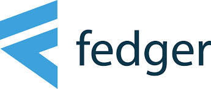

Data Scientist at fedger.io
Additional Description of Tasks
Using Python (particularly Keras and Tensorflow), one of my primary responsibilities is to build and improve Fedger's object detection deep learning architecture, particularly for clients within the hospitality industry
By continuously reading research papers and staying up-to-date with the newest research topics and trends within object detection, another primary responsibility is to propose new ideas to the AI/Data Science team, analyze their possible benefits and drawbacks, and implement these ideas if it may lead to an improvement
As an example, some of my implementations include
Faster R-CNN,
Feature Pyramid Network,
Ensembling of Multiple CNN Models,
SGD/Adam/Nadam with Warm Restarts, and multiple loss functions
Conduct code reviews of other data scientists and software developers to help detect bugs in code and/or logic, optimize code for performance and readability, and ensure consistency regarding its documentation (Flake8, Pydocstyle, MyPy, PEP8, etc.)
Constantly conduct experiments to help determine the impact that particular changes in the architecture bring through the use of our Google Cloud Platform
When necessary, I am also responsible for querying our database to see how we can leverage our data to gather useful statistics/visualizations to further guide what we do
By continuously reading research papers and staying up-to-date with the newest research topics and trends within object detection, another primary responsibility is to propose new ideas to the AI/Data Science team, analyze their possible benefits and drawbacks, and implement these ideas if it may lead to an improvement
As an example, some of my implementations include Faster R-CNN, Feature Pyramid Network, Ensembling of Multiple CNN Models, SGD/Adam/Nadam with Warm Restarts, and multiple loss functions
Conduct code reviews of other data scientists and software developers to help detect bugs in code and/or logic, optimize code for performance and readability, and ensure consistency regarding its documentation (Flake8, Pydocstyle, MyPy, PEP8, etc.)
Constantly conduct experiments to help determine the impact that particular changes in the architecture bring through the use of our Google Cloud Platform
When necessary, I am also responsible for querying our database to see how we can leverage our data to gather useful statistics/visualizations to further guide what we do

- Location: Cologne, Germany
- Start Date: November 2018
- End Date: December 2019
- List of Relevant Technologies Used: Python, GCP Storage, Git, Tensorflow, Keras